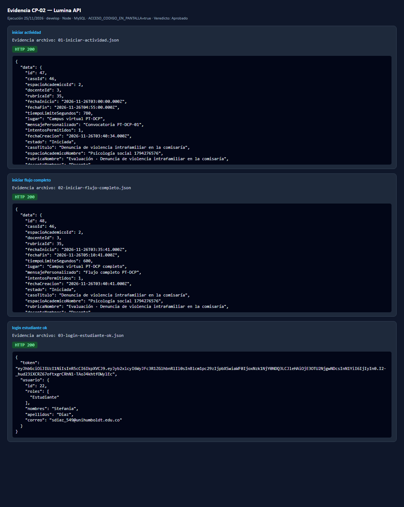
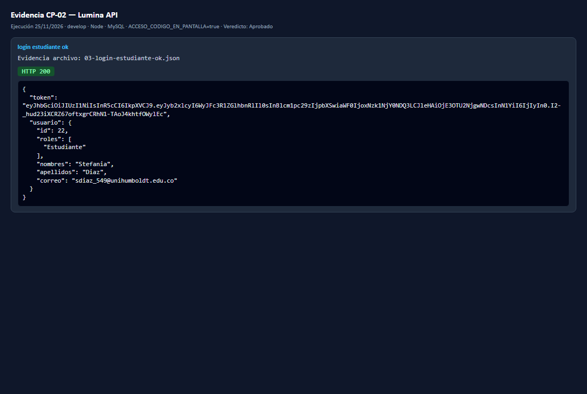
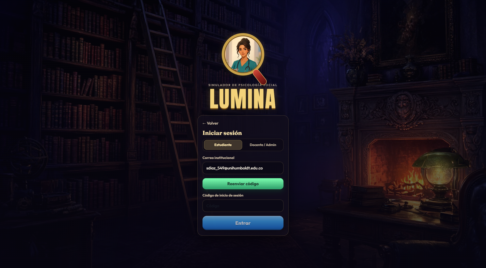

6.2 Caso de uso: Inicio de una sesión de simulación — Prueba N.º 2 (CP-02)
INFORMACIÓN GLOBAL DEL CASO DE PRUEBA
| CASO DE PRUEBA No. | CP-02 |
|---|---|
| VERSIÓN DE EJECUCIÓN | Rama develop, backend v1.0.0 — re-ejecución 25–26/11/2026 |
| FECHA EJECUCIÓN | 25/11/2026 |
| CASO DE USO: | Inicio de una sesión de simulación |
| MODULO DEL SISTEMA |
DATOS DE ENTRADA
| CAMPO / ESCENARIO | RESPUESTA ESPERADA | COINCIDE | RESPUESTA DEL SISTEMA |
|---|---|---|---|
| Docente inicia actividad | 200 Iniciada | SI | 200 Iniciada |
| Login estudiante OTP válido | 200 + token | SI | 200 token=true |
RESULTADOS DE LA PRUEBA
| Defectos y desviaciones | No se encontraron defectos. |
|---|---|
| Veredicto | Aprobado |
| Probador | Stefanía Díaz Raigoza (re-ejecución consolidada) |
EVIDENCIAS DE EJECUCIÓN (capturas del sistema)



